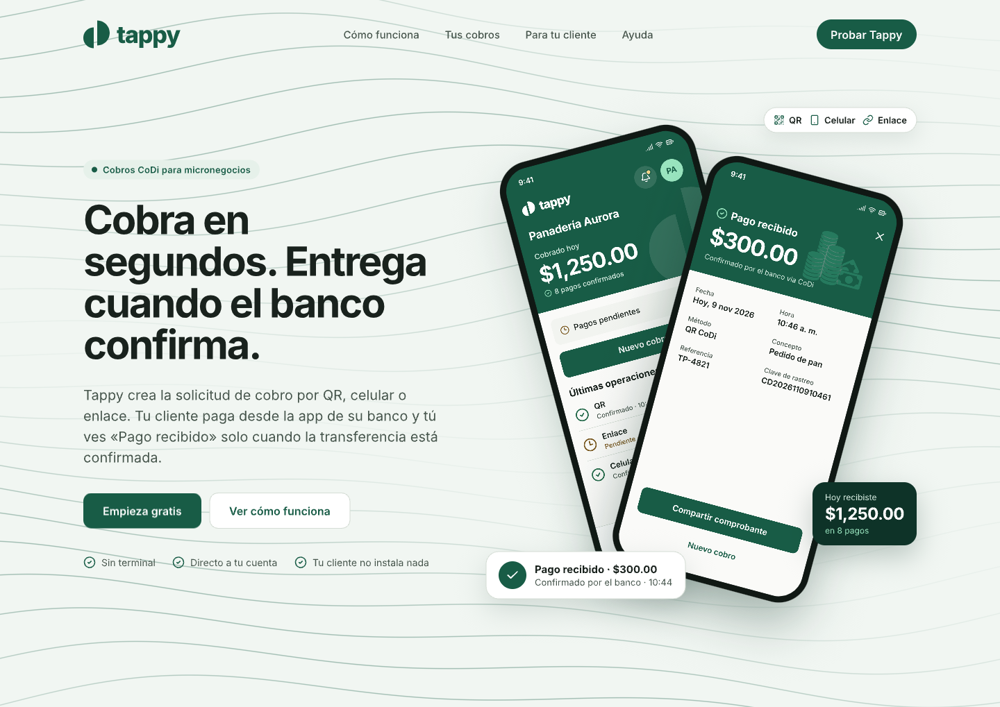

Hero: referencia de Pen y copy preparado

Copy para implementar
Cobra con claridad. Entrega cuando el pago esté confirmado.
Tappy está diseñado para ayudarte a solicitar cobros y consultar su recepción. El dinero llega a la cuenta bancaria de tu comercio.
CTA: Cómo funciona → sección interna. Se retiran la promesa de gratuidad y el plazo de cobro.